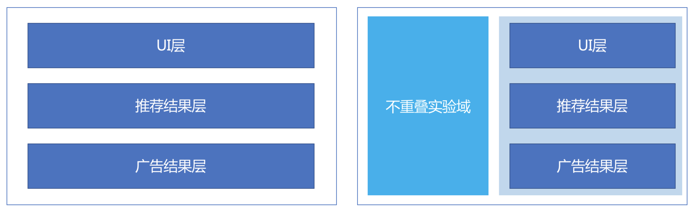
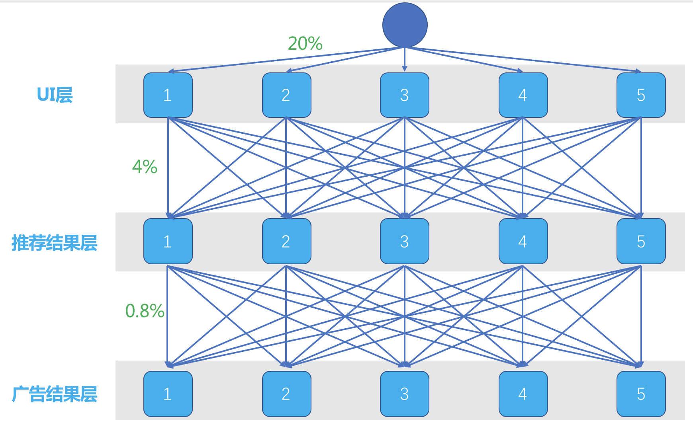
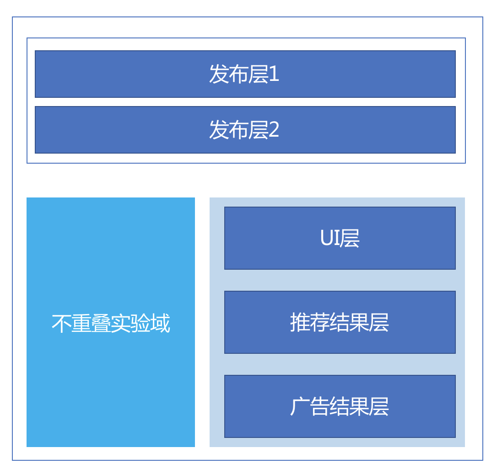
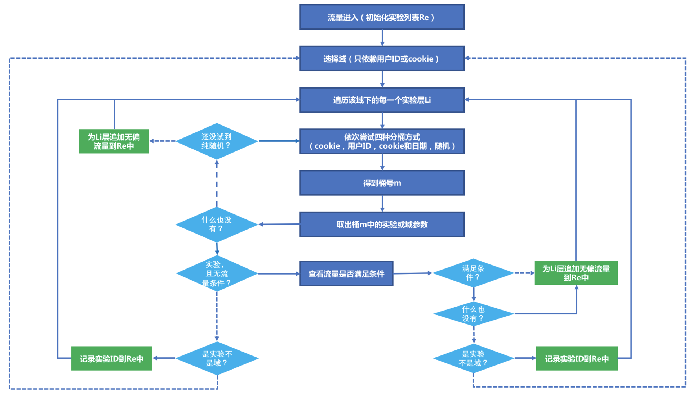

- 00 开篇词 用知识去对抗技术不平等.md.html
- 01 你真的需要个性化推荐系统吗_.md.html
- 02 个性化推荐系统有哪些绕不开的经典问题？.md.html
- 03 这些你必须应该具备的思维模式.md.html
- 04 画鬼容易画人难：用户画像的“能”和“不能”.md.html
- 05 从文本到用户画像有多远.md.html
- 06 超越标签的内容推荐系统.md.html
- 07 人以群分，你是什么人就看到什么世界.md.html
- 08 解密“看了又看”和“买了又买”.md.html
- 09 协同过滤中的相似度计算方法有哪些.md.html
- 10 那些在Netflix Prize中大放异彩的推荐算法.md.html
- 11 Facebook是怎么为十亿人互相推荐好友的.md.html
- 12 如果关注排序效果，那么这个模型可以帮到你.md.html
- 13 经典模型融合办法：线性模型和树模型的组合拳.md.html
- 14 一网打尽协同过滤、矩阵分解和线性模型.md.html
- 15 深度和宽度兼具的融合模型 Wide and Deep.md.html
- 16 简单却有效的Bandit算法.md.html
- 17 结合上下文信息的Bandit算法.md.html
- 18 如何将Bandit算法与协同过滤结合使用.md.html
- 19 深度学习在推荐系统中的应用有哪些_.md.html
- 20 用RNN构建个性化音乐播单.md.html
- 21 构建一个科学的排行榜体系.md.html
- 22 实用的加权采样算法.md.html
- 23 推荐候选池的去重策略.md.html
- 24 典型的信息流架构是什么样的.md.html
- 25 Netflix个性化推荐架构.md.html
- 26 总览推荐架构和搜索、广告的关系.md.html
- 27 巧妇难为无米之炊：数据采集关键要素.md.html
- 28 让你的推荐系统反应更快：实时推荐.md.html
- 29 让数据驱动落地，你需要一个实验平台.md.html
- 30 推荐系统服务化、存储选型及API设计.md.html
- 31 推荐系统的测试方法及常用指标介绍.md.html
- 32 道高一尺魔高一丈：推荐系统的攻防.md.html
- 33 和推荐系统有关的开源工具及框架介绍.md.html
- 34 推荐系统在互联网产品商业链条中的地位.md.html
- 35 说说信息流的前世今生.md.html
- 36 组建推荐团队及工程师的学习路径.md.html
- 加餐 推荐系统的参考阅读.md.html
- 结束语 遇“荐”之后，江湖再见.md.html
- 捐赠
29 让数据驱动落地，你需要一个实验平台
数据驱动这个口号喊了很多年了，这个口号也几乎成为了行业共识，但是数据驱动又像鬼一样，人人都在说，但几乎没人见过它长什么样子。
数据驱动和实验平台
要做到数据驱动，就要做到两点：第一点是数据，第二点是驱动。这听上去似乎像是废话，实际上不是。
这第一点的意思是，要采集数据，全方位，数据像是石油一样，没有它就谈不上驱动；第二点的意思是要让大家看数据，光采集了没有用，还需要让所有人盯着数据看。
而要做到驱动，需要一个AB实验平台。数据驱动的重点是做对比实验，通过对比，让模型、策略、设计等不同创意和智慧结晶新陈代谢，不断迭代更新。
对比实验也常常被大家叫做ABTest，这个意思就是一个A实验，一个B实验，这样说可能有些模糊，所以我需要先和你说说什么叫做对比实验，然后再说说一个对比实验平台应该长什么样子。
你都可以把任何一家个性化推荐产品想象成一个函数，这个函数有很多参数影响它工作，函数的输出就是推荐物品列表。这些函数参数可以有各种组合，通过其中一种参数组合去面对一小股用户的考验，这就是一个实验。
要做实验，要做很多实验，要很快做很多实验，要很多人同时很快做很多实验，就需要实验平台。
要讨论实验平台，先要认识实验本身。互联网实验，需要三个要素。
- 流量：流量就是用户的访问，也是实验的样本来源。
- 参数：参数就是各种组合，也是用户访问后，从触发互联网产品这个大函数，到最后返回结果给用户，中间所走的路径。
- 结果：实验的全过程都有日志记录，通过这些日志才能分析出实验结果，是否成功，是否显著。
把互联网产品想象一个有向无环图，每个节点是一个参数，不同的分支是参数的不同取值，直到走到终点，这一条路径上所有经过的参数取值，构成了服务的调用路径。
具体在推荐系统中，可能这些参数就是不同的模型与策略名称。每当一个用户经过这一系列的调用路径后，就为每一个分支产生了一条实验样本。
于是问题来了，每一个用户到来时，如何为他们决定要走哪条路径呢？这就要先经过实验对照来看。
实验要观察的结果就是一个随机变量，这个变量有一个期望值，要积累很多样本才能说观察到的实验结果比较接近期望值了，或者要观察一定时期才能说对照实验之间有区别或者没区别。
因为只有明显有区别并且区别项好，才能被进一步推上全线。
在设计一个实验之初，实验设计人员总是需要考虑下面这些问题。
- 实验的起止时间。这涉及到样本的数量，关系到统计效果的显著性，也涉及能否取出时间因素的影响。
- 实验的流量大小。这也涉及了样本的数量，关系到统计效果的显著性。
- 流量的分配方式。每一个流量在为其选择参数分支时，希望是不带任何偏见的，也就是均匀采样，通常按照UUID或者Cookie随机取样。
- 流量的分配条件。还有一些实验需要针对某个流量的子集，例如只对重庆地区的用户测试，推荐时要不要把火锅做额外的提升加权。
- 流量如何无偏置。这是流量分配最大的问题，也是最难的问题。同时只做一个实验时，这个问题不明显，但是要同时做多个实验，那么如何避免前面的实验给后面的实验带来影响，这个影响就是流量偏置，意思是在前面实验的流量分配中，有一种潜在的因素在影响流量分配，这个潜在的因素不易被人察觉，潜在的因素如果会影响实验结果，那么处在这个实验后面获得流量的实验，就很难得到客观的结论。这个无偏置要求，也叫做“正交”。
这些问题也是实验平台在设计之初要考虑的。试想一下，推荐系统中，算法工程师总是在尝试很多模型，或者在线下给出很多的模型调参，线下评测时，各种指标都是一片锣鼓喧天、红旗招展，恨不得立即上线去验验真实效果。
每一个算法工程师都这么想，但是线上流量有限，因此需要重叠实验，废水循环，最好能够做到洗脸的水冲马桶，这样灵活的实验平台长什么样子。
Google公司的实验平台已经成为行业争相学习的对象，所以今天我会以Google的实验平台为主要对象，深入浅出地介绍一个重叠实验平台的方方面面。
重叠实验架构
所谓重叠实验，就是一个流量从进入产品服务，到最后返回结果呈现给用户，中间设置了好几个检查站，每个检查站都在测试某些东西，这样同时做多组实验就是重叠实验。
前面说了，重叠实验最大的问题是怎么避免流量偏置。为此，需要引入三个概念。
- 域：是流量的一个大的划分，最上层的流量进来时首先是划分域。
- 层：是系统参数的一个子集，一层实验是对一个参数子集的测试。
- 桶：实验组和对照组就在这些桶中。
层和域可以互相嵌套。意思是对流量划分，例如划分出50%，这50%的流量是一个域，这个域里面有多个实验层，每一个实验层里面还可以继续嵌套域，也就是可以进步划分这50%的流量。下面这两个图示意了有域划分和没有域划分的两种情况。

图中左边是一个三层实验，但是并没有没有划分域。第一层实验要测试UI相关，第二层要测试推荐结果，第三层要测试在推荐结果插入广告的结果。
三层互不影响。图中的右边则添加了域划分，也就是不再是全部流量都参与实验中，而是被分走了一部分到左边域中。剩下的流量和左边的实验一样。
这里要理解一点，为什么多层实验能做到重叠而不带来流量偏置呢？
这就需要说桶的概念。还是上面示意图中的左图，假如这个实验平台每一层都是均匀随机分成5个桶，在实际的实验平台上，可能是上千个桶，这里只是为了举例。
示意图如下：

这是一个划分域的三层实验。每一层分成5个桶，一个流量来了，在第一层，有统一的随机分流算法，将Cookie或者UUID加上第一层ID，均匀散列成一个整数，再把这个整数对5取模，于是一个流量就随机地进入了5个桶之一。
每一个桶均匀得到20%的流量。每一个桶里面已经决定好了为你展示什么样的UI，流量继续往下走。每一个桶的流量接着依然面对随机进入下一层实验的5个桶之一，原来每个桶的20%流量都被均分成5份，每个桶都有4%的流量进入到第二层的每个桶。
这样一来，第二层每个桶实际上得到的依然是总流量的20%，而且上一层实验带来的影响被均匀地分散在了这一层的每一个桶中，也就是可以认为上一层实验对这一层没有影响。同样的，第三层实验也是这样。
这就是分层实验最最基本的原理。在这个基础上，增加了域的概念，只是为了更加灵活地配置更多实验。
关于分层实验，有几点需要注意：
- 每一层分桶时，不是只对Cookie或者UUID散列取模，而是加上了层ID，是为了让层和层之间分桶相互独立；
- Cookie或者UUID散列成整数时，考虑用均匀的散列算法，如MD5。
- 取模要一致，为了用户体验，虽然是分桶实验，但是同一个用户在同一个位置每次感受不一致，会有损用户体验。
Google的重叠实验架构还有一个特殊的实验层，叫做发布层，优先于所有其他的实验层，它拥有全部流量。这个层中的实验，通常是已经通过了ABtest准备全量发布了。示意图如下：

前面举例所说的对用户身份ID做散列的流量分配方式，只是其中一种，还有三种流量分配方式，一共四种：
- Cookie+层ID取模；
- 完全随机；
- 用户ID+层ID取模；
- Cookie+日期取模。
在实验中，得到流量后还可以增加流量条件，比如按照流量地域，决定要不要对其实验，如果不符合条件，则这个流量不会再参与后面的实验，这样避免引入偏置，那么这个流量会被回收，也就是使用默认参数返回结果。
在Google的架构中，由于层和域还可以嵌套，所以在进入某个层时，可能会遇到一个嵌套域，这时候需要按照域划分方式继续下沉，直到遇到实验或者被作为回收流量返回。整个实验平台，工作的示意图如下所示：

说明如下：
- 图中涉及了判断的地方，虚线表示判断为假，实线表示判断为真。
- 从最顶端开始，不断遍历域、层、桶，最终输出一个队列Re，其中记录对每一个系统参数子集如何处理，取实验配置的参数还是使用默认参数，其中无偏流量表示使用默认参数，也就是在那一层不参与实验，流量被回收。
- 拿到Re就得到了全部的实验，在去调用对应的服务。
统计效果
除了分层实验平台之外，还存在另一个问题，每一个实验需要累计获得多少流量才能得到实验结论呢？
这涉及了一点统计学知识。实验得到的流量不够，可以说实验的结论没有统计意义，也就浪费了这些流量，而实验在已经具有统计意义之后，如果还占用流量做测试，则也是在浪费流量。
如何确定实验规模呢？Google给出了如下公式：
\[N >= 10.5(\\frac{s}{\\theta})^2\]
公式中：
- \(s\) 是实验指标的标准差。
- \(\\theta\) 是希望检测的敏感度，比如想检测到2%的CTR变化。
上面这个公式计算出来的实验规模，表示以90%的概率相信结果的显著性，也就是有90%的统计功效。
对比实验的弊端
AB测试实验平台，是产品要做到数据驱动必不可少的东西，但是这种流量划分的实验方式也有自己的弊端，列举如下：
- 落入实验组的流量，在实验期间，可能要冒着一定的风险得到不好的用户体验，在实验结束之前，这部分流量以100%的概率面对这不确定性；
- 要得得到较高统计功效的话，就需要较长时间的测试，如果急于看到结果全面上线来说有点不能接收；
- 下线的实验组如果不被人想起，就不再有机会得到测试。
诸如此类弊端，也可以考虑在实验平台中用Bandit算法替代流量划分的方式，通过Bandit算法选择不同的参数组合、策略，动态实时地根据用户表现给出选择策略，一定程度上可以避免上面列举的弊端。
总结
实验平台是推荐系统要做到数据驱动必不可少的东西，但是如何做到科学高效快速地做实验呢？
常见的做实验，只是简单地选择一个尾号的用户ID作为实验组，再选择另一个尾号作为对照组，甚至选择剩下所有的用户ID作为对照组。
这样做出来的实验，显然是有问题，因为并不知道通过用户尾号来分组是不是能做到无偏？另一个问题是，这样就只能在一个时期只能做一个实验，非常低效。
本文以Google开放的实验平台架构作为原型，对其核心技术做了详细介绍。这个实验平台做到了同时无偏地做多组对照实验。因为它巧妙地引入了三个概念的嵌套结合：
- 域；
- 层；
- 桶。
三个概念层层相扣，流量划分得到了一个可行的方案。这个实验平台方案已经应用在很多公司中，你不妨在自己的公司尝试做一下。
最后留给你一个问题，关于分层实验的原理，你是否已经理解了为什么层和层之间可以做到毫不影响，欢迎给我留言讨论。
© 2019 - 2023 Liangliang Lee. Powered by gin and hexo-theme-book.